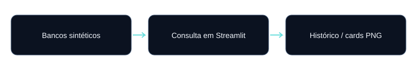
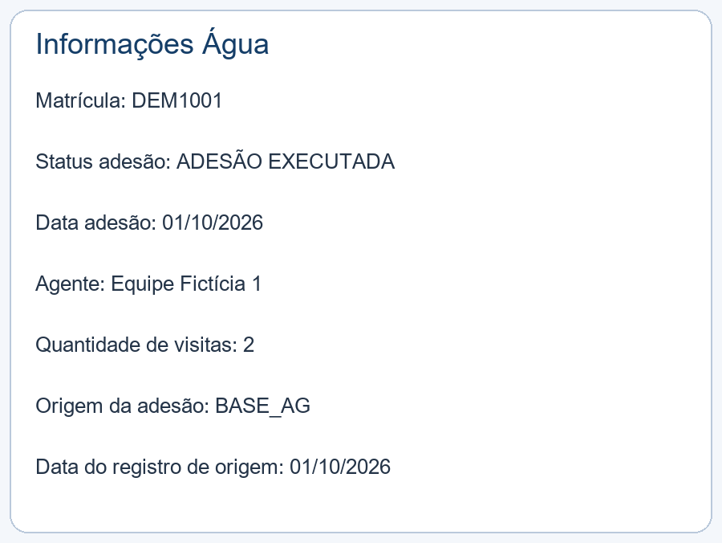

Consumo dos dados
App Pesquisa Fictício
Consulta de Água, Esgoto e Obra por matrícula, endereço ou nome, com histórico e cards em PNG.
O problema
Consultar informações em bases separadas exige alternar entre arquivos e telas. O aplicativo oferece uma interface única para explorar os dados e apresentar os resultados de forma consistente.
Contribuição demonstrada
Implementação do fluxo em Python, definição das regras descritas, organização das saídas e disponibilização de documentação e testes. A versão pública oferece amostras fictícias para reprodução.
Fontes e arquitetura
Quatro bancos SQLite gerados artificialmente: Água, Esgoto, Obra e histórico de Água. As imagens de demonstração são desenhos locais.

- Pesquisar matrícula ou localizar registros por endereço e nome.
- Consultar as bases de Água, Esgoto e Obra.
- Exibir informações, histórico e imagens fictícias em páginas próprias.
- Gerar cards PNG a partir dos registros consultados.
Decisões de engenharia
| Decisão | Comportamento implementado |
|---|---|
| Isolamento | Nenhum banco, foto, credencial ou serviço operacional é necessário para usar a cópia fictícia. |
| Geocodificação | Desativada: endereços inventados não são enviados a serviços externos. |
| Imagens | A página usa desenhos locais, em vez de consultar galerias reais. |
| Compartilhamento | Cards podem ser baixados em PNG. O link de WhatsApp exige ação do usuário; nada é enviado automaticamente. |
Resultado reproduzível
Amostra inteiramente fictícia. Estes números demonstram comportamento funcional; não são métricas de produção ou benchmark de escala.
| Verificação | Resultado da amostra |
|---|---|
| Bases principais | 3 matrículas fictícias por base |
| Histórico de Água / Esgoto | 3 eventos em cada |
| Imagens | 2 desenhos locais |
| Exemplo de pesquisa | DEM1001; Pessoa Fictícia; Rua Fictícia |
Como foi validado
Três testes verificam consultas, busca textual, geração de PNG e navegação com AppTest, sem iniciar um servidor ou navegador.
Referência: validação de 13/10/2026. Consulte o README para execução e o GitHub Actions para o status mais recente.

Limitações e próximos passos
O portfólio oferece código e um exemplo estático de card. Não há demonstração online hospedada vinculada nesta versão. A revisão funcional com AppTest não substitui uma avaliação completa da interface.
Uma evolução deve ser implementada e testada antes de ser apresentada como funcionalidade concluída.